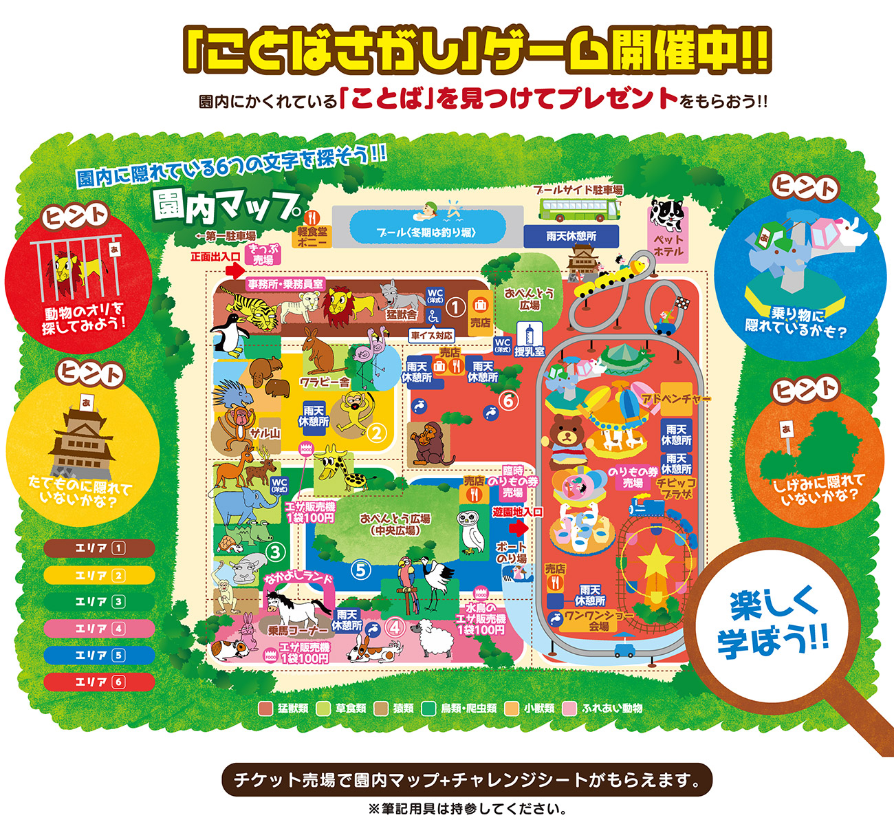

<ons-page id="map" modifier="bgImage">
  <!-- ツールバー -->
  <ons-toolbar modifier="toolbar">
    <div class="left">
      <ons-back-button modifier="toolbar">戻る</ons-back-button>
    </div>
    <div class="center">園内マップ</div>
    <div class="right">
      <ons-toolbar-button>
        <ons-icon icon="fa-qrcode" class="toolbarIcon" onclick="myPushPage('qrscan.html')"></ons-icon>
      </ons-toolbar-button>
    </div>
  </ons-toolbar>
  
  <!-- 本体だよ -->
  <ons-gesture-detector>
      
  </ons-gesture-detector>
</ons-page>
